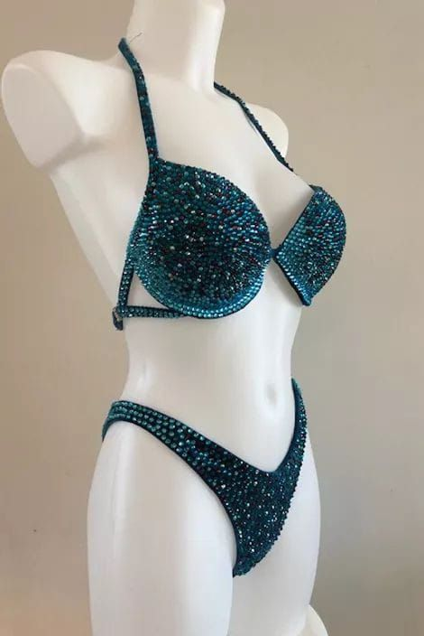

A crystal stage bikini is not a beach bikini with stones added. It is a competition garment, built to be judged under bright lights, at a distance, while the athlete poses, turns and holds positions. As a competition bikini manufacturer in Sialkot, Pakistan, we make crystal stage and posing suits to each client's own design — and the buyers happiest on show day are the ones who checked the right details before ordering, not after the suit arrived. This guide covers those details: crystal work, connectors, lining, fit, colour under lights, and the timeline to work backwards from.

A beach or fashion bikini is designed to be worn, swum in and washed repeatedly. A stage suit has a different job: it must sit perfectly in posing positions, catch the light evenly from every angle, and frame the athlete's physique without distracting from it. That changes almost every construction choice — cup shaping and padding, the competition cut of the bottom, fabric chosen for how it reads under lights rather than how it feels in water, and crystal work placed as a deliberate pattern, not scattered decoration. Judging the suit by beachwear standards is the first mistake to avoid.
It also changes your brief: a stage-suit order needs the competition category, top and bottom cut, crystal pattern and colours, connector style, and measurements taken in posing stance. Settle as much as possible before sampling, and the sample will need fewer corrections.
A competition bikini has five elements that decide how it looks and performs on stage:
Crystal work is where stage suits are most visibly separated from ordinary swimwear, and where the most questions should be asked. Start with coverage: full coverage, a border, a scattered pattern, or a motif? Each reads very differently under stage lighting. Full coverage gives the strongest sparkle at a distance but adds weight; a border or scattered pattern is lighter and can let the fabric colour carry the look. Agree the choice before production and confirm it on the sample.
Next, check the pattern itself. Ask to see the crystal layout on the sample before approving bulk production: even spacing, clean edges where the pattern stops, and symmetry between the two cups and the two sides of the bottom. A pattern that looks fine flat can look uneven once the cups are curved, so the sample should be tried on and photographed in posing positions.
Finally, check security. Suits are handled, transported, tried on repeatedly and worn under hot lights, and a stone lost on show day cannot be fixed backstage in seconds. Ask how the stones are fixed, whether the work is hand-finished, and how the edges and stress points — cup centres, connector joins, waistband — are secured. A vague answer here is a warning sign.
Connectors are the smallest part of the suit and one of the most visible. A chunky, shiny connector draws the eye to the centre of the top and the hips; a slim, well-matched one disappears and lets the physique and crystal work carry the look. Decide the style with the overall design, not as an afterthought — plain metal, crystal-set, or a shaped link, in a finish matching the stone colours — and check that all connectors on one suit match in size, finish and stone setting, firmly attached with no sharp edge against the skin.
Ask too whether a damaged connector can be replaced before a show, and whether a spare is supplied — in peak week there is no time to reorder.
Stage-suit fabric is chosen for opacity, stretch recovery and colour under lights. It must be fully opaque when stretched — a fabric that goes sheer in a deep pose is a failed suit, however pretty it looked flat — recover its shape after every pose rather than bagging, and hold its colour under strong, warm stage lighting, which washes out some shades and deepens others. Judge fabric in bright light and in posing positions, not only in a daylight photograph.
Lining is the quiet partner of the fabric: it holds the suit's shape, protects the crystal work from inside, and gives the elastic something solid to grip. Check that it runs through the whole suit — not only the cups — in the same colour family as the outer fabric, so no pale edge shows at a seam. Elastic should be firm, even and placed so the suit stays put through turns and held poses. If the sample shifts in a practice posing routine, say so at sample stage: it will not improve in bulk production.
Colour is the most common surprise in stage-suit ordering. A shade chosen from a phone screen or a daylight swatch can look entirely different under competition lighting — paler, warmer, or flatter — and it sits against tanned skin, which changes the contrast again. Two checks protect you: ask for the sample to be photographed under bright, direct light as well as daylight, and if you have a shortlist of two colours, sample the one you are least sure about. One extra sample costs little beside a suit that disappears under the lights.
Crystal colours need the same treatment: stones matching the fabric exactly can vanish at a distance, while a slight contrast — a clear or AB-finish stone on a deep colour — often reads better from the judges' seats. Confirm stone colours on the sample, not from a colour name alone.
Competition fit is measured differently from everyday swimwear fit. Measure in the positions the suit will be worn in — arms raised, back arched, hips turned — because a suit that fits perfectly standing still can pull, gap or ride up in a pose. Give your manufacturer the competition measurements and category cut, and flag any shape change expected before show day.
When the sample arrives, run through the full posing routine, not just a mirror check: cups in a front pose, bottom in a back pose, side connectors in a side pose, and the whole suit after ten minutes of movement. Note every adjustment in writing — cup size, bottom rise, strap length, elastic tension — and confirm corrections before bulk production. A sample approved from photographs alone is a gamble; one approved after a posing trial is a decision.
Competition categories have rules about suit cut, coverage and decoration, and they differ between federations and divisions. Before finalising a design, check the rules for the exact competition you are entering and share them with your manufacturer — a suit legal under one federation's rules may not be legal under another, and a design changed after production starts is expensive to fix. Make this check before sampling, not after the suit is made.
Ordering follows the same sequence as any custom garment, with one extra emphasis: nothing is approved from a description alone. Send your design or tech file — sketches, reference photos, crystal pattern, connector choice, measurements and federation rules. Without a tech file, a clear reference picture plus measurements is enough to start, and we manufacture the suit exactly to your design. We then develop a sample in 7–10 working days for your approval in posing positions, and bulk production begins only once the sample is approved in writing.
Minimums are straightforward: our swimwear trial MOQ is 30–50 pieces per style, suiting a small label, a team of athletes or a boutique ordering a competition range. Your own brand labels and tags are sewn in, and a "Made in [your country]" tag can be added on request; otherwise our standard "Made in Pakistan" tag is used. As with every order, we quote exactly for your design once we have seen it — never from a one-line description.
Work backwards from the competition date, with a buffer. Sampling takes 7–10 working days after your design is received, plus time to try the sample and request corrections — allow at least one correction round. Bulk production then depends on order size and crystal complexity, and shipping to North America or Europe adds its own window by air or sea. Start at least eight to ten weeks before show day, earlier for intricate crystal work or large orders. A suit ordered four weeks out is possible only if the design is already settled and no correction is needed — a risk no athlete wants in peak week.
You do not need a finished tech pack to begin — your design or reference pictures, your measurements, and the competition you are preparing for are enough. Send them on WhatsApp at +92-339-5099397 or by email at contact.safettech@gmail.com, and we will reply with an exact quote for your suit and a sampling plan. Or use our contact page to start your order — and see the full range on our swimwear page.

A stage suit carries months of hard preparation into a few minutes under the lights, so I take these orders personally and seriously. Send me your design and your show date, and I will make sure the suit you step out in is one you can trust completely.
Ahmed Zahid
Founder & Director, Safe-T TECH International · Sialkot, Pakistan
Send your design today — samples in 7–10 days, swimwear trial orders from 30–50 pieces per style.